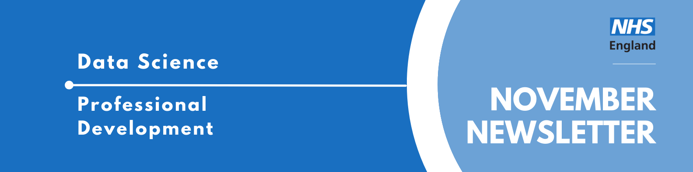
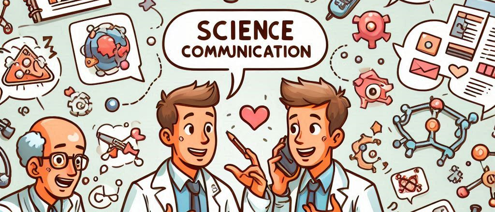

Data Science Community for Health and Care Newsletter November 2024

Welcome to the latest newsletter from the Data Science Community for Health and Care, brought to you by the NHS England Data Science Professional Development Functional Team.
The newsletter team are always happy to receive constructive feedback, and we invite you to send us any contributions you may have.
If you cannot access something of interest to you, please reach out.
Thanks for reading! – newsletter team
RPySOC: Conference Musings
written by Jennifer Struthers
If you are a regular reader of this newsletter you might have seen the RPySOC event plugged each month, which was at long last held last week. The conference was a celebration of all things R/Python/Open-Source, and everyone there was excited to show off the projects they had been involved in over the last year.
There were at least 100 people gathered in the Birmingham International Conference Centre, and more present online where the talks were being live-streamed. People seemed to be saying hello to colleagues that they hadn’t seen in a while, and sitting down at tables to meet new people and discuss all things healthcare and coding.
I went along to present my project on experimenting with open-source dashboarding tools and packages, which I had undertaken earlier this year to develop my data visualisation and general coding skills. It was a brief talk, with just a 15 minute timeslot, but I got surprisingly more nervous as the morning went on. I’ve given variants of this presentation before, and I was confident in answering any questions on it, really I should have been fine. However this was the first time since I was in university that I had stood in front of people and spoken to them, instead of hidden behind my computer screen talking to my slides. Strange how something like hybrid working has completely changed something as fundamental as giving a presentation.
Luckily, my fears were unfounded. The stage lights were so bright I couldn’t see anyone anyway and I could pretend I was still at my desk, talking at my slides like normal. Before I knew it I was back at my table and could breathe and enjoy the rest of the conference, while typing away to answer all the questions and comments that had come through during my talk.
There was a Slack channel organised for questions which meant that online viewers had the same chance to ask questions as in-person attendees, and the speakers could take their time afterwards to answer extra questions and give links. Almost every single presentation included links to public GitHub repositories, and people were actively encouraged to check out the code, and re-use whatever they wanted to.
The whole conference was focused on sharing, collaborating and supporting others, regardless of where they were at in the coding journey. It was a great gathering of a community (full of provided food and coffee!), and what really struck me was how keen everyone was to get involved, give people pointers, and congratulate them on the work they had done. The talks were evenly distributed between Python and R users, and everything pitched at a level anyone with a coding interest could understand. If you’ve got a project you’re working on and are keen to share the results in front of an audience, I would definitely recommend next year’s RPySOC!
The conference organisers will be sharing the recordings of the talks, along with slides and links, at a later date so that the knowledge can be shared on and on.
Data Science Discussion

The data science team at NHS England hold Data Science Discussions on a monthly (ish!) basis. These discussions are typically informal, and in a small group to encourage as much discussion as possible. The most recent Data Science Discussion was delivered by Ben Wallace, one of the senior data scientists within the team.
Ben was keen to introduce the idea of science communication and how to get your ideas across correctly. We discussed how to explain complex topics such as lossy compression in an easily understandable manor. Through examples we discussed when explanations were too complex, too simple, or just right, before having a go ourselves at explaining tricky data science terms.
Interested in learning more about science communication? Check out these resources below:
- How to Give A Talk (blog)
- Storytelling with Data (Youtube channel)
- How to communicate scientific uncertainty (free online course from University of Oxford)
Community Shout Outs
There are a myriad of data science communities doing excellent work to link people, share resources and support people in their careers and personal projects: check out some of them below and get involved!
NHS-R
The NHS-R Community started in 2018 to promote the use of R in the NHS and the community has grown rapidly ever since. It is a community that is broader than the NHS as members come from public sector organisations across the UK, including Local Authorities and Civil Service, as well as academics and voluntary sector people who have an interest in healthcare and R.
NHS-PyCom
Led by enthusiasts and advocates, the NHS Python Community for Healthcare is an open community of practice that champions the use of the Python programming language and open code in the NHS and healthcare sector. Join them on Slack, YouTube, LinkedIn and GitHub.
rainbowR
rainbowR is a community that supports, promotes and connects LGBTQ+ people who code in the R language, and spreads awareness of LGBTQ+ issues through data-driven activism. They are currently running a book club, get involved! Join the community.
AnalystX
AnalystX are here to connect and empower the data and analytics community, providing a safe space for professionals to collaborate in a radical way across the health system. They host lots of resources on their site, including links to their sub-communities of Data Science, Data Engineering, GeoHealth and more!
The Turing Way
The Turing Way is an open science, open collaboration, and community-driven project. We involve and support a diverse community of contributors to make data science accessible, comprehensible and effective for everyone. Our goal is to provide all the information that researchers, data scientists, software engineers, policymakers, and other practitioners in academia, industry, government and the public sector need to ensure that the projects they work on are easy to reproduce and reuse.
Call for Content!
Got a project to showcase? An event to plug? A tip to share?
We want to hear from you! This newsletter is a community effort and we want to showcase and spread the word about all of the good work being done across it.
Click here, or at the bottom of the page to submit your contribution!
Need a Quick Break?
How many tries will it take you?